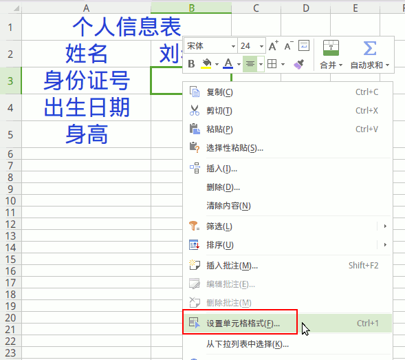
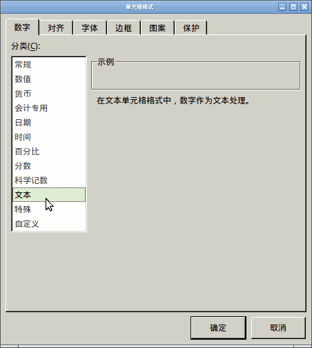

第2课 学会数据类型
1、点活动、wps，打开绿色电子表格
2、进入窗口后，点叉（×）按钮，关闭不用的标签；
3、点中间“新建”，或者加号“+”按钮，新建一个空白文档；
5、首先输入表头内容，合并标题两个单元格；
6、选中第一行两个格子，点右上边的“合并居中”；
7、选中所有格子，设置字体“文泉驿微米黑”，大小24，颜色，居中
8、选中身份证号旁边的格子，瞄准点右键，选“设置单元格格式”；

9、在出来的面板里，左边选“文本”格式，点“确定”；

10、输入自己的身份证号，按回车键，18位，中间是生日，左上角是文本标志；
11、再选中出生日期右边的格子，点右键，“设置单元格格式”
左边选择“日期”格式，右边选第一个样式，点确定；
12、输入生日，中间用反斜杠分隔，输完按回车键；
13、再选中身高旁边的单元格，同样设置为“数值”格式，2位小数；
输入自己的身高，米
14、点左上角的“WPS表格”，点“保存”；
12、点左下角的“本地文档”
13、上边文件名改成“第2课”，小数点后面不要动，
左边找到主文件夹，找到自己的文件夹，保存；
本节学习了的基础知识，如果你成功地完成了练习，请继续学习下一课内容；
返回目录 下一课
本教程由TeliuTe制作|著作权所有
基础教程网：http://teliute.org/
美丽的校园……
转载和引用本站内容，请保留作者和本站链接。